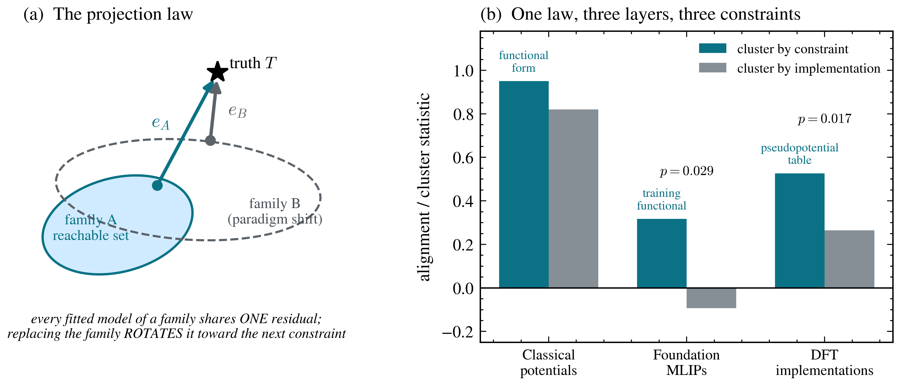
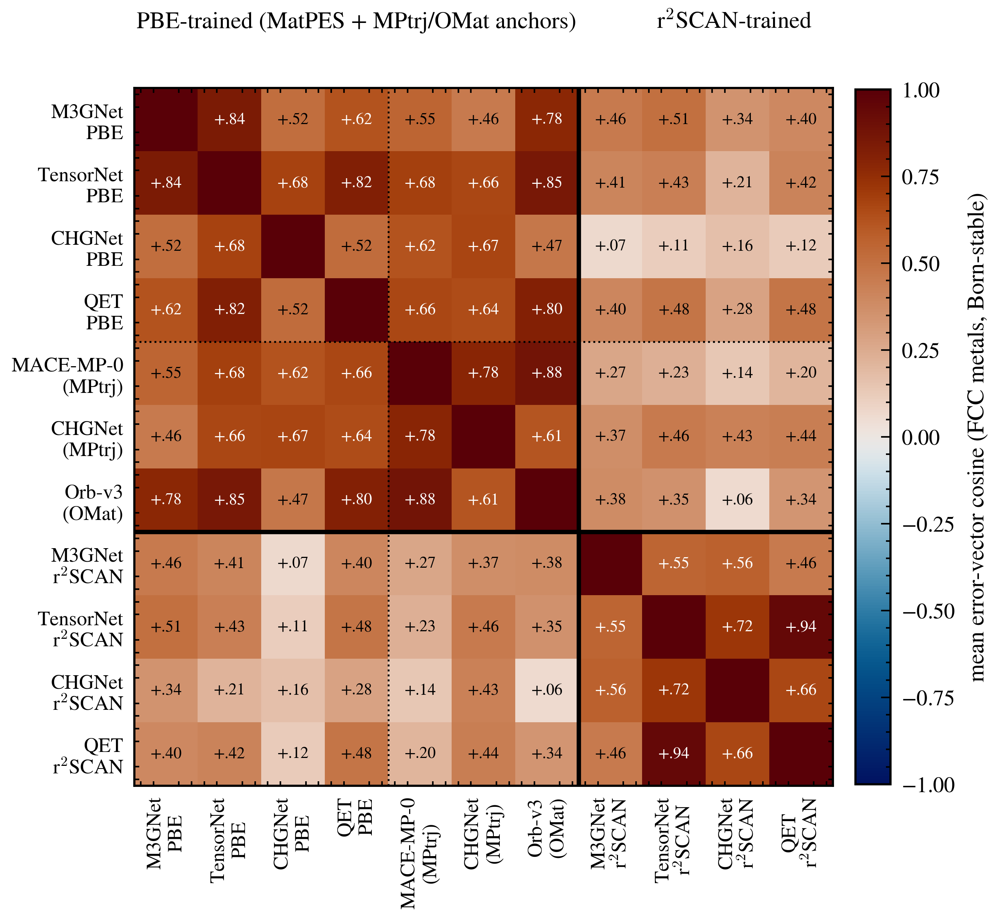
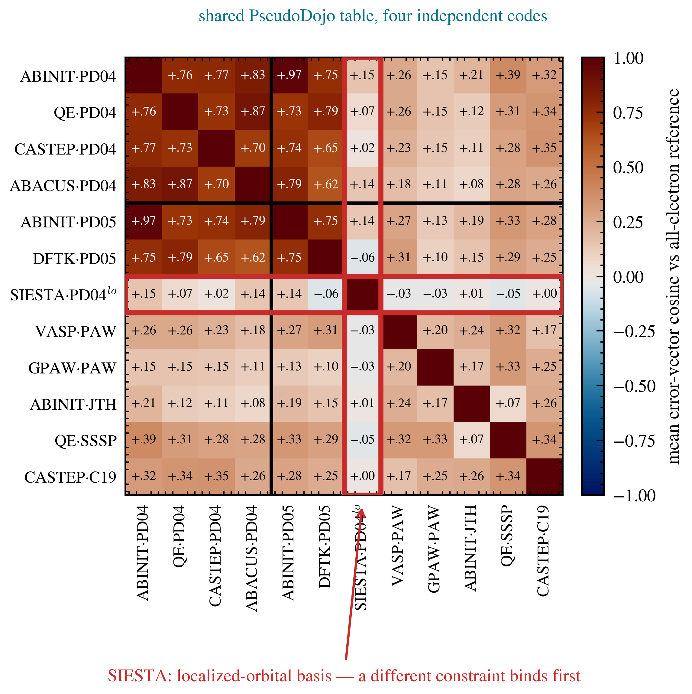
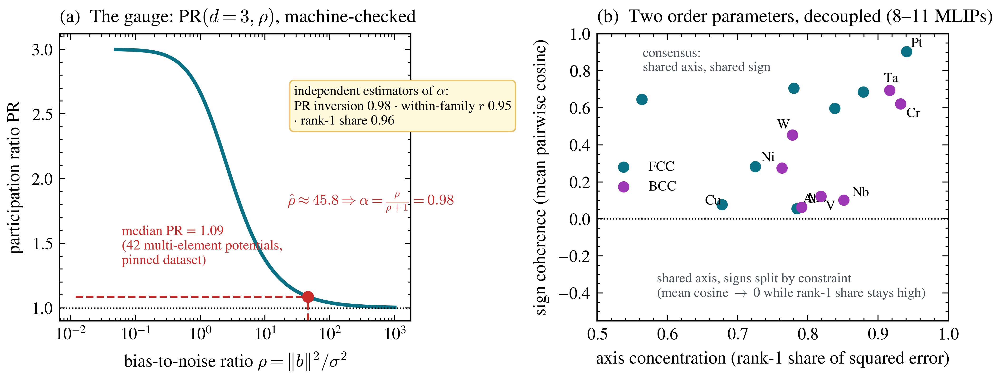
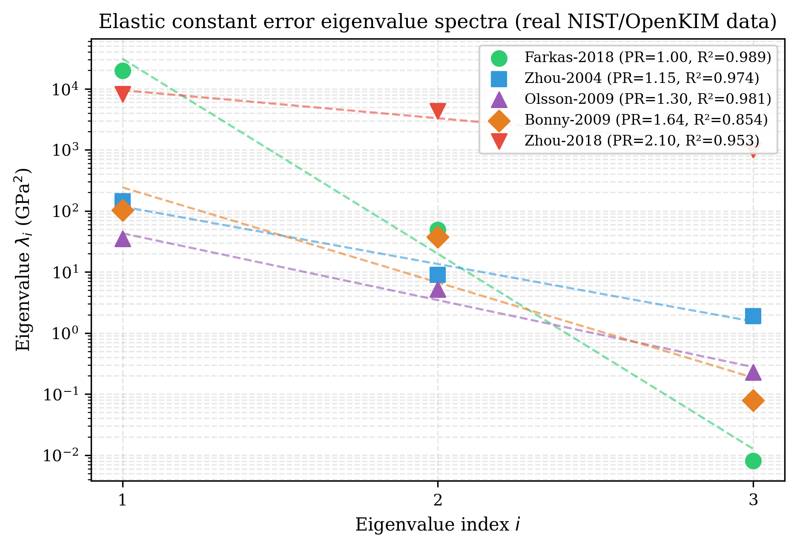
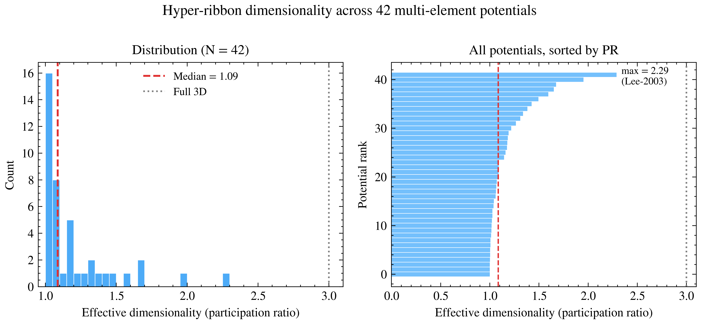
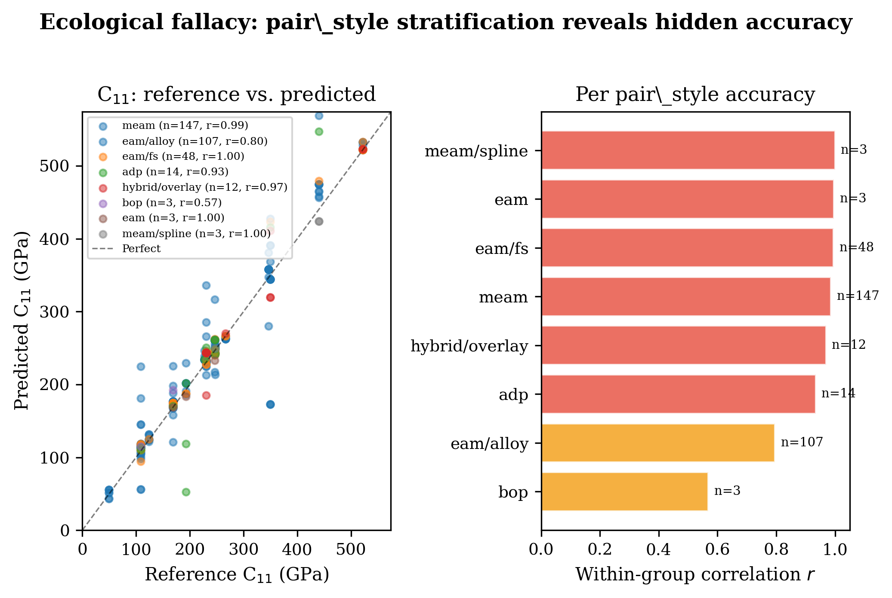

A proposed law about model-ensemble errors and an archived earlier draft — with a public replication kit, three pre-registrations and Lean-checked arithmetic. Failures reported as failures; later corrections are listed below.
This page is the web edition; use your browser's Print for a clean paper copy, or download the typeset PDFs below.
These are working drafts from June 2026, kept as written so the record stays inspectable; they are not for citation. No Lupine paper has been peer-reviewed or accepted yet. Read them with these later results:
Retired headlines and the reasons are listed in the corrections log.
Working paper · June 2026 · theory, two pre-registered factorial experiments, replication kit
When many independently constructed models agree, the agreement is routinely read as confidence. We formalize and test the opposite reading: a model family is a projection operator, fitting drives every member toward the point of the family's reachable set nearest the truth, and the shared residual — one direction in observable space — is a fingerprint of whatever constraint binds the family. The theory core is machine-checked (Lean 4, zero unproven obligations): normal-cone consensus theorem; participation-ratio gauge; ribbon/consensus decoupling; affine decomposition of closed affine reachable sets; local normal-cone theorem for $C^1$ smooth non-convex immersions; and Hoeffding concentration of the empirical second-moment matrix used by the gauge. We then test the law's sharpest consequence — errors organize by constraint, not by implementation — with pre-registered factorial experiments at three layers of one epistemic stack: classical interatomic potentials, foundation machine-learned potentials (4 architectures × 2 training functionals), and DFT implementations (12 methods, 384 crystals). Each experiment carried an explicit refutation condition; neither was triggered, and four of seven registered predictions failed and are reported as failures. The anisotropy persists at every layer — median participation ratio 1.09, ~1.3, and 1.10 out of 3 — while its direction rotates to the next constraint upstream.
Certification boundary: corrected elastic-error aggregates from this program are empirical/oracle diagnostics and are uncertified as a correction clearance. Every included C11/C12/C44 target would need its own valid scalar clearance; no derived modulus or composite inherits one without a separate vector-valued theorem for the exact map.




Hyper-Ribbon Universality and Why Pooled Benchmarks Mislead · Working draft · June 2026 · archived 2026-11-11
Archived 11 November 2026. Kept for the record; not for citation. The draft's central claim, a universal low-dimensional error geometry across “559 potentials”, is no longer supported: the 559 are model–element tensors with 423 distinct KIM ids, the historical counts are not re-verified, low participation ratios are partly rank-limited, and the hyper-ribbon claim is Open and descriptive. The crystal-structure (BCC/FCC) pattern it mentions was 1.5% data contamination. The draft’s I² and random-effects intervals were computed on dependent C11/C12/C44 rows of the same tensors; they are anti-conservative and no longer reported as inference. Current status: Hypothesis Ledger.
Prediction errors are not noise. Across 559 interatomic potentials and forty years of development — pair potentials through embedded-atom methods to modern functional forms — elastic-constant errors universally occupy low-dimensional hyper-ribbon manifolds (effective dimensionality 1.0–2.3 out of 3, median 1.09), and the geometry has not moved while accuracy improved: the sloppy-model universality class, observed for the first time in cross-model error space rather than single-model parameter space. The methodological consequence is sharp: between-element heterogeneity is extreme (I² = 98.5%), pooled benchmarks misstate model accuracy (within-family correlation 0.95 vs 0.82 pooled), and the paper demonstrates the repair — stratified evaluation with random-effects meta-analysis. The paper also audits itself: an apparent element-level electronic-structure signal is traced to a fitting-depth confounder, and a Born-screened extension to three foundation MLIPs (with mechanical-stability failures reported, not hidden) provides the proof-of-concept the companion law paper develops. Crystal-structure-dependent correlation patterns are reported among the empirical findings.



Both are working drafts, not submitted to any venue and not peer-reviewed; the Forty Years draft is archived. Every headline statistic is verifiable from committed raw data: the replication kit (commit-versioned, public; archived on Zenodo at 10.5281/zenodo.20787874) runs Tier 1 verification with NumPy alone in seconds (python tier1_analyze.py) and re-derives the raw elastic constants from public model checkpoints in Tier 2. Pre-registrations were committed before execution (dffbe595, ebf39e33); the round-2 registration with symmetric kill conditions is included. The theory core — normal-cone consensus theorem, participation-ratio gauge, ribbon/consensus decoupling, affine decomposition, smooth non-convex local normal cone, and finite-sample concentration — is checked in Lean 4 (zero active sorry, zero new axioms, build locked) and builds from the open repository. Lean 4 checks that these statements follow from their hypotheses; it does not check the physics, the reference data or the pipeline, and it does not show that real potentials satisfy the hypotheses. An academic review (2026-06-16) lists strengths and six MUST-FIX gates, and a follow-up adversarial review verified the first-pass fixes and caught additional wording/placeholder issues; both are addressed in the current PDFs.